Nokino is a gamified sustainability education app designed specifically for teenagers (ages 13-19). Inspired by Duolingo, it transforms learning into a competitive, interactive experience using narrative-driven lessons, mini-games, and real-world action challenges. Structured as a disposable learning tool, Nokino encourages long-term sustainable habits without requiring indefinite screen time.
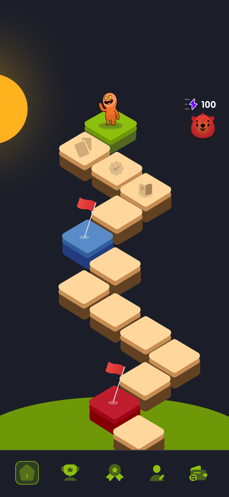
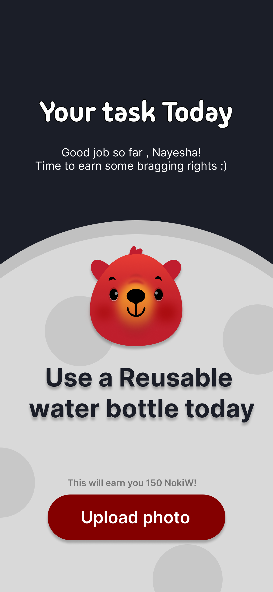
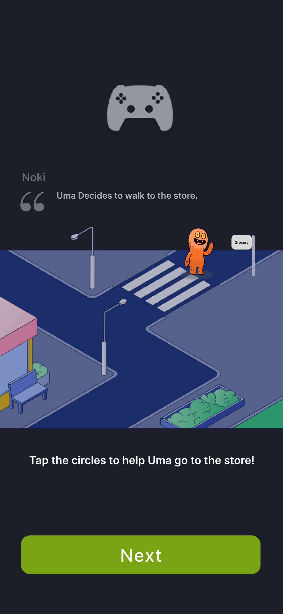
Traditional sustainability education isn't working for Gen Z. It's too complex, too theoretical, and frankly, too boring. While teenagers are highly aware of climate change, the sheer scale of the problem leads to eco-anxiety rather than action. They lack clear, bite-sized steps to make a difference in their daily lives.
Of teens are concerned about the climate but struggle to find easy, actionable steps to help.
Average daily mobile screen time for teens. If we want to change their habits, we have to meet them where they live.
Through competitive analysis of apps like Duolingo and Forest, I found that gamification significantly enhances commitment. Users demonstrate higher retention when rewards are tied to real-world impact and social competition.
Referencing B.J. Fogg's Behavior Model, I realized that big lectures fail. Small, bite-sized tasks (microlearning) paired with instant gratification are required to foster genuine habit formation over time.
Instead of reading dense articles, users needed to learn by doing. The system had to be fun enough to compete with social media, yet structured enough to leave them with lasting, real-world sustainable habits.
Finding a unique approach to sustainability wasn't easy. Here are the ideas that had to die so Nokino could live. Hover to reject.
A social app to join people and network over sustainability goals.
Reason: Teenagers do not care about networking.
A fashion app strictly focused on thrifting and dressing to impress.
Reason: Too boring and singular in focus.
A Pokémon Go style app encouraging local beach cleanups for virtual items.
Reason: Parents won't let teens wander to beaches alone, and AR was out of scope.
I brought my vision to life with an initial concept focused on daily tasks, basic rewards, and a trash sorting mini-game.
I wanted users to complete simple, eco-friendly tasks every day, like using a reusable water bottle or taking public transport. The goal was to make sustainability feel tangible and easily integratable into daily routines.
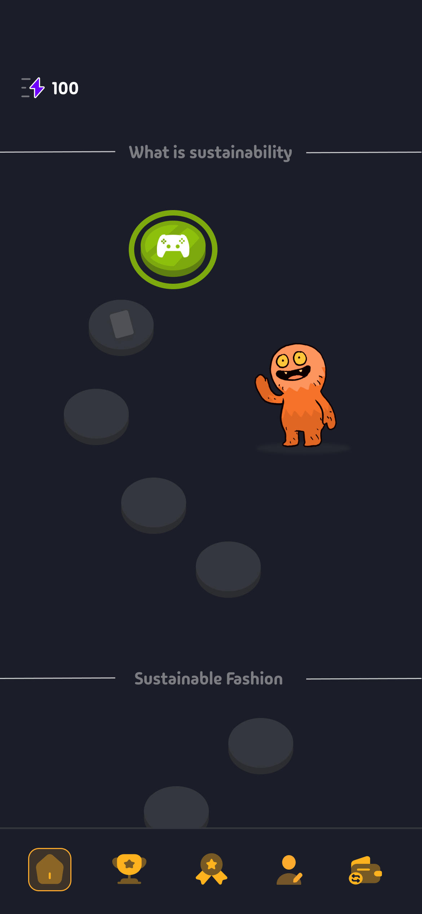
This served as the primary engagement hook. Users were challenged to quickly sort waste into the correct recycle, compost, or landfill bins. It was designed to test reflexes and baseline knowledge simultaneously.
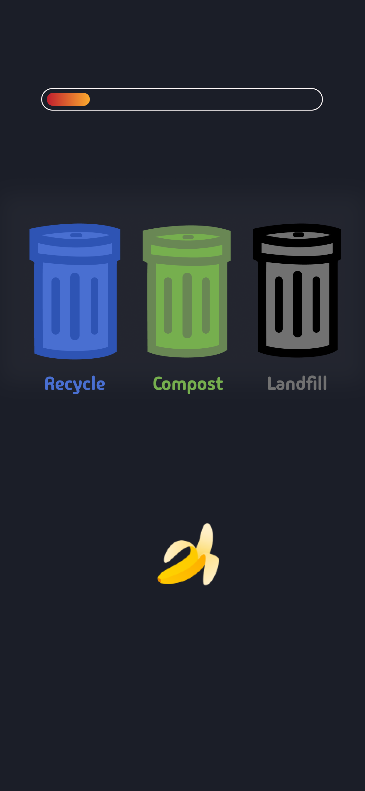
Noki was introduced to serve as a guide and cheerleader. Users earned points and NokiWatts to keep the mascot powered, but the initial flow lacked variation and immediate, actionable real-world connections.
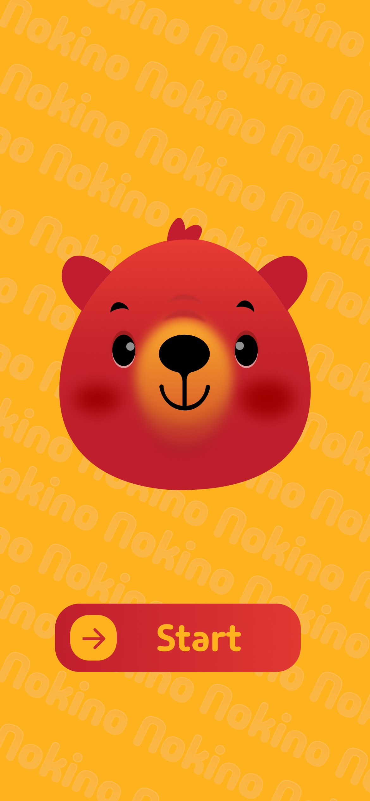
Testing with a 16-year-old and an 18-year-old revealed major roadblocks. The trash sorting game lacked immediate feedback, leaving users confused if they sorted correctly. Furthermore, after completing a task, the main menu failed to provide a clear path forward, and the static backgrounds failed to keep users fully engaged. This static, confusing iteration proved we needed heavy UI enhancements before moving forward.
Information is grouped into 4 distinct tracks: What is Sustainability, Sustainable Fashion, Zero Waste Living, and Energy & Climate. Each track relies on a tight 5-level progression loop to keep users engaged.
High-energy hooks like "Recycle Rush" to test reflexes and baseline knowledge.
Bite-sized microlearning delivering essential facts without overwhelming text.
Real-world integration: "Take the bus" or "Use a reusable bottle".
Narrative-driven decision-making scenarios hosted by Noki.
Reinforcing knowledge to earn final NokiWatts and virtual badges.
Nokino is a gamified educational tool designed to bridge the gap between teens' environmental awareness and actual, real-world action. It translates overwhelming climate anxiety into achievable, bite-sized daily habits.
Unlike traditional platforms, it is structured as a "disposable learning tool." The ultimate goal isn't to keep teens addicted to the screen forever, but to graduate them into the real world once sustainable habits are firmly established.
A clean, vibrant interface featuring Earthy tones with bright accents to keep the aesthetic energetic but grounded.
Noki acts as both guide and stakes. The round, soft shapes make him approachable, while his "energy" mechanic keeps users accountable for daily tasks.
Visual Progress: Clear track paths replacing the confusing menus of Stage 1.
NokiWatts: Energy levels tied directly to the mascot's wellbeing.
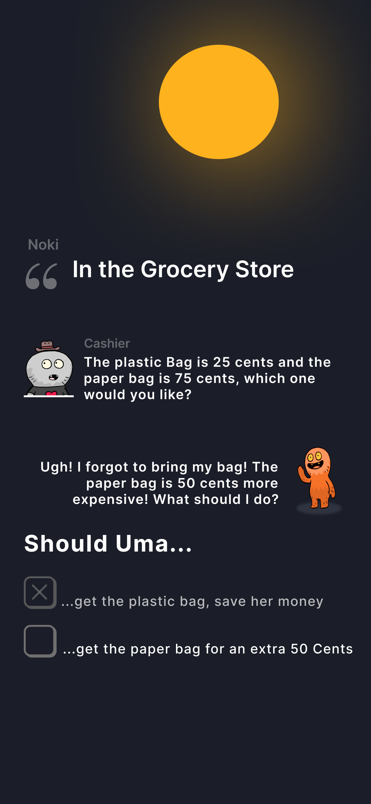
Placing users directly into real-life decision scenarios, such as choosing between a 25-cent plastic bag or a 75-cent paper bag at a checkout counter.
Simplifying sustainability issues into relatable, digestible role-playing moments helps teens connect abstract concepts to their everyday spending and habits.
Immediate Feedback: Clear consequences for every choice.
Real-World Context: Moving beyond theory into actionable daily scenarios.
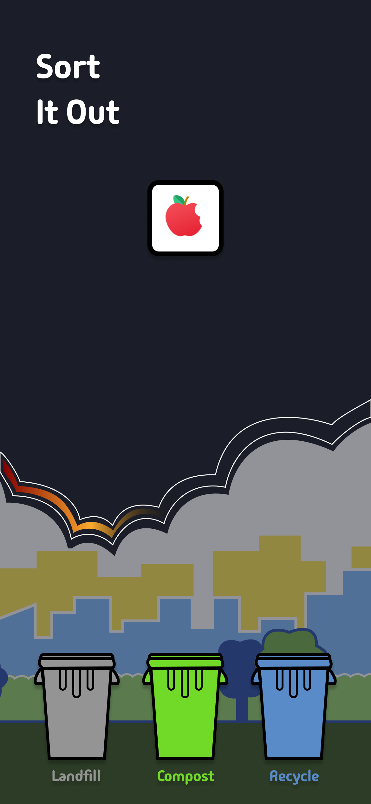
The final iteration of the Trash Sorting mechanic, updated with immediate visual feedback to correct the confusion discovered during initial user testing.
Providing real-time correct/incorrect indicators builds user confidence and reinforces learning loops without frustrating the player.
Time-Limited Challenges: Keeping engagement high and competitive.
Microlearning: Subtly teaching proper waste management under pressure.
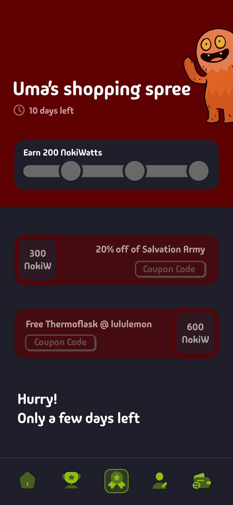
Bridging the gap between the app and the physical world. Users track progress against friends and trade virtual achievements for actual discounts at sustainable brands.
Virtual points aren't always enough to drive long-term habit changes for teens. Connecting in-app progress to real-life social validation and financial incentives creates a much stronger behavioral loop.
Leaderboards: Compete with friends and local communities.
Brand Partnerships: Unlock discounts at local thrift stores by completing eco-challenges.
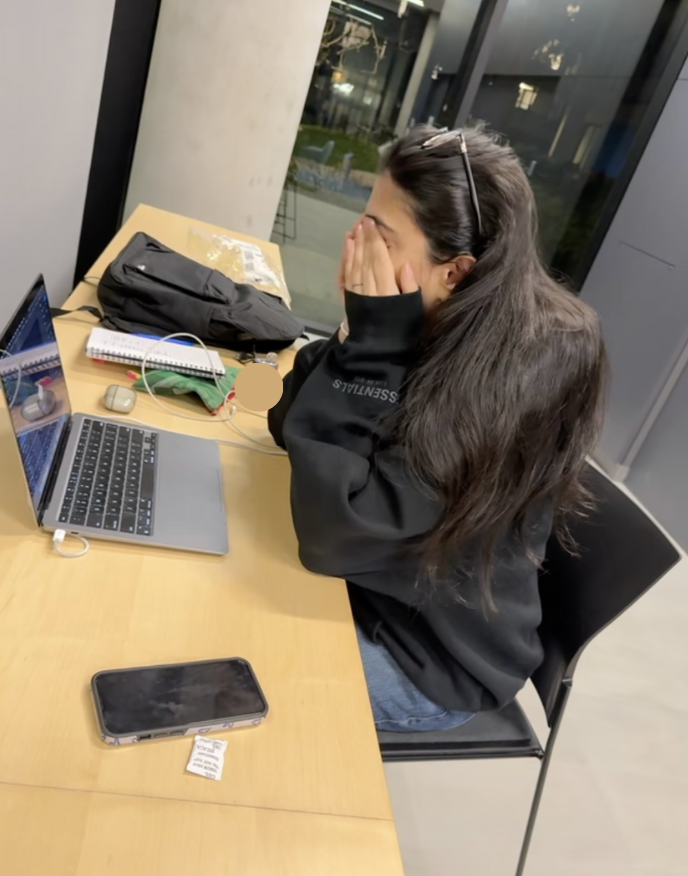
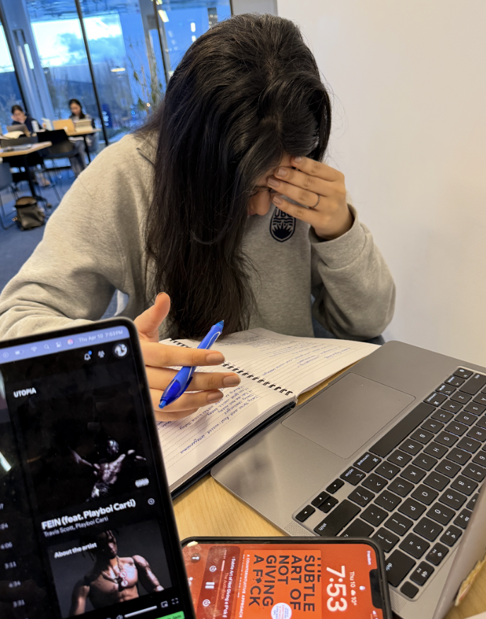
Balancing gamification with education was incredibly hard. I had to constantly simplify complex sustainability concepts so they didn't feel preachy or overwhelming for a younger audience. The goal was always to build a "disposable learning tool"—an app that users eventually outgrow because the habits have successfully transferred into their real lives.
Technically, polishing the UI meant creating a new Figma page for nearly every single micro-transition on the home screen. It was a massive effort for half-second interactions, but it was absolutely crucial for achieving that premium, game-like final feel. The late nights mapping out Noki's states and refining the "Recycle Rush" logic taught me the profound difference between a good idea and a viable, engaging digital product.